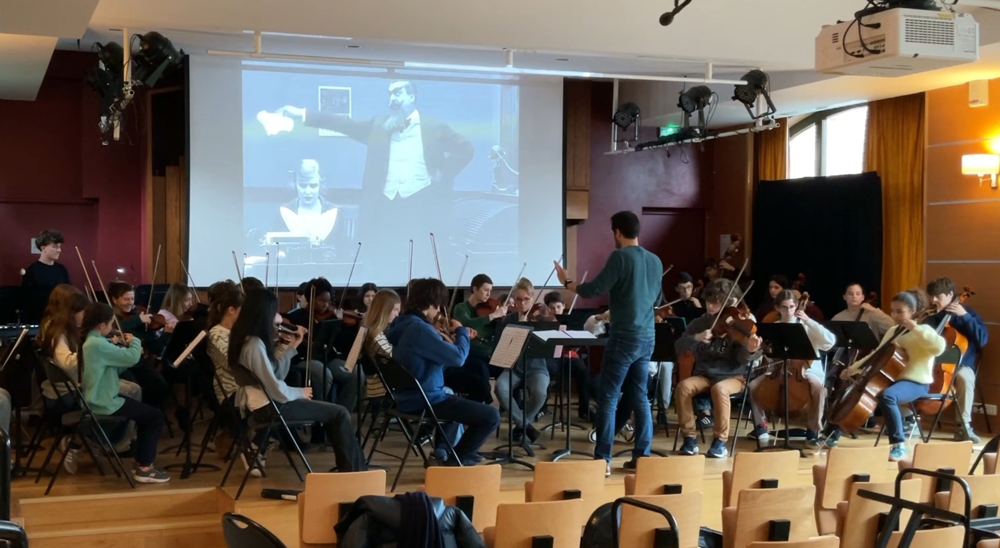

Ciné-concert Chaplin
The Rink — vidéo publiée par Matthieu Roy ↗

Le projet
The Rink (Charlot s’évade), The Adventurer (Charlot patine) et The Floorwalker (Charlot chef de rayon) constituent un projet de ciné-concert qui s’inscrit dans la tradition du ciné-concert, où la musique devient un véritable partenaire dramaturgique de l’image.
Commande de l'ochestre Kosmofony, le projet est conçu dans un format immédiatement accessible, avec une formation orchestrale légère, un niveau adapté aux conservatoires et un matériel prêt à l’emploi. Les trois films peuvent être proposés séparément ou réunis en programme de 75 minutes.
Les premières compositions datent de 2010. Le troisième volet, The Floorwalker, a été composé en 2022 et créé par l’orchestre Kosmofony au Cinéma des cinéastes. Le projet a connu plusieurs reprises jusqu’en 2026 (MK2 Bibliothèque François Mitterrand, Studio des cinéaste, Studio des Ursulines, Forum des Halles, Thêtre du Nord) et continue d'être proposé. Matthieu Roy a eu l'occasion de diriger ses propres compositions avec des orchestre d'élèves de concervatoires en ciné-concert (Sèvres en 2018, Meudon en 2025, Paris en 2026).